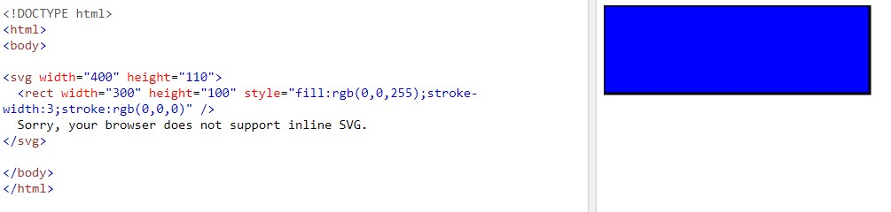
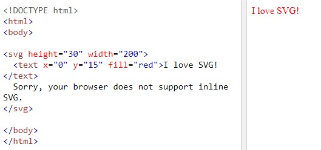
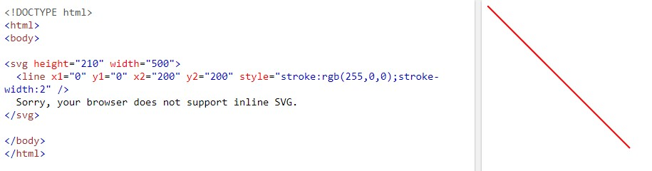
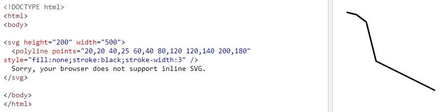

Aprende SVG
SVG son las siglas de Scalable Vector Graphics. SVG define gráficos basados en vectores en formato XML.
- Rectángulo SVG
- Círculo SVG
- Texto SVG
- Línea SVG
- Polilínea SVG
Rectángulo SVG
El elemento <rect> se utiliza para crear un rectángulo y variaciones de una forma de rectángulo:

Explicación del código:
- Los atributos de ancho y alto del elemento <rect> define la altura y el ancho del rectángulo
- El atributo de estilo se utiliza para definir propiedades CSS para el rectángulo.
- La propiedad de relleno CSS define el color de relleno del rectángulo.
- La propiedad de ancho de trazo de CSS define el ancho del borde del rectángulo.
- La propiedad de trazo CSS define el color del borde del rectángulo.
Para obtener más información, haga clic aquí.
Círculo SVG
El elemento <circle> es usado para crear un círculo:

Explicación del código:
- Los atributos cx y cy definen las coordenadas x e y del centro del círculo. Si se omiten cx y cy, el centro del círculo se establece en (0,0)
- El atributo r define el radio del círculo
Para obtener más información, haga clic aquí.
Texto SVG
El elemento <text> es usado para defir un texto:

Para obtener más información, haga clic aquí.
Línea SVG
El elemento <line> es usado para crear una línea:

Explicación del código:
- El atributo x1 define el inicio de la línea en el eje x
- El atributo y1 define el inicio de la línea en el eje y
- El atributo x2 define el final de la línea en el eje x
- El atributo y2 define el final de la línea en el eje y
Para obtener más información, haga clic aquí.
Polilínea SVG
El elemento <polyline> se utiliza para crear cualquier forma que consista solo en líneas rectas (que esté conectada en varios puntos):

Explicación del código:
- El atributo de puntos define la lista de puntos (pares de coordenadas x e y) necesarios para dibujar la polilínea.
Para obtener más información, haga clic aquí.